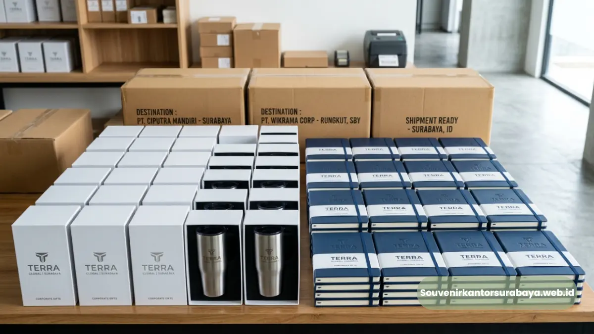
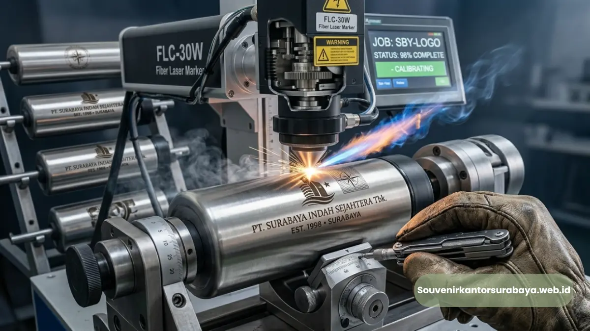

Produk jadi souvenir kantor custom logo Surabaya berkualitas tinggi.
Souvenir kantor custom logo Surabaya adalah proses pencetakan identitas merek perusahaan pada produk merchandise seperti alat tulis, gadget, hingga hampers, menggunakan teknik cetak yang disesuaikan dengan material produk. Layanan ini membantu perusahaan menghadirkan branding yang konsisten pada setiap souvenir yang dibagikan.
- Custom logo dapat diterapkan pada berbagai kategori produk souvenir kantor.
- Teknik cetak dipilih berdasarkan material, seperti sablon, bordir, emboss, atau laser engraving.
- File logo dalam format vektor menghasilkan cetakan yang lebih presisi.
- Proses cetak umumnya melalui tahap approval desain sebelum produksi massal.
- Souvenirkantorsurabaya.web.id menyediakan layanan custom logo untuk berbagai kebutuhan korporat.
Bagaimana Proses Cetak Logo pada Souvenir Kantor Berlangsung?
Proses cetak logo pada souvenir kantor berlangsung melalui tahapan konsultasi desain, penyesuaian file logo, pemilihan teknik cetak sesuai material, produksi sampel, lalu produksi massal setelah desain disetujui.
Tahap awal dimulai dengan pengiriman file logo dari perusahaan, idealnya dalam format vektor agar hasil cetak tetap tajam pada berbagai ukuran produk.
Tim produksi kemudian menyesuaikan posisi dan ukuran logo dengan bentuk produk, misalnya penempatan logo pada badan pulpen metal stylus atau pada permukaan map folder kulit sintetis.
Setelah desain disetujui, sampel awal biasanya dibuat untuk memastikan warna dan detail logo sesuai ekspektasi sebelum masuk ke tahap produksi dalam jumlah besar. Tahap akhir adalah quality control menyeluruh sebelum produk dikemas dan dikirim ke perusahaan pemesan.

Teknik Cetak Apa yang Paling Awet untuk Souvenir Kantor?
Teknik cetak yang paling awet untuk souvenir kantor umumnya adalah laser engraving dan emboss, karena logo menyatu langsung dengan permukaan material sehingga tidak mudah pudar dibandingkan teknik cetak permukaan biasa.
Laser Engraving
Teknik ini cocok untuk material logam dan kayu, menghasilkan ukiran logo yang presisi dan tahan lama meskipun produk sering digunakan sehari-hari. Laser engraving umumnya digunakan pada produk seperti pulpen metal stylus atau powerbank slim fast charging.
Emboss atau Deboss
Teknik emboss cocok untuk material seperti kulit sintetis atau kertas tebal, menghasilkan efek timbul atau tenggelam pada logo yang memberikan kesan premium. Teknik ini sering diaplikasikan pada map folder kulit sintetis atau cover block note spiral hard cover.
Sablon dan Bordir
Sablon umumnya digunakan pada material kain atau plastik, sementara bordir lebih sesuai untuk produk berbahan tekstil. Kedua teknik ini menawarkan fleksibilitas warna logo yang lebih beragam dibandingkan laser engraving atau emboss.
Baca Juga
Produk Apa Saja yang Bisa Dicustom Logo Perusahaan?
Produk yang bisa dicustom logo perusahaan meliputi alat tulis seperti block note dan pulpen metal, gadget seperti powerbank dan flashdisk, hingga aksesoris kerja seperti mouse pad dan map folder kulit sintetis.
Hampir seluruh kategori produk souvenir kantor dapat disesuaikan dengan logo perusahaan, dengan penyesuaian teknik cetak berdasarkan jenis material masing-masing produk.
Fleksibilitas ini memungkinkan perusahaan menghadirkan identitas merek yang konsisten di berbagai jenis merchandise, baik untuk kebutuhan seminar, gathering, maupun hadiah klien VIP.
Apa yang Perlu Disiapkan Perusahaan Sebelum Proses Custom Logo?
Perusahaan perlu menyiapkan file logo dalam format vektor, menentukan warna resmi sesuai brand guideline, serta menetapkan jumlah dan jenis produk yang akan dicetak sebelum proses custom logo dimulai.
File logo yang jelas mempercepat proses approval desain dan mengurangi risiko revisi berulang. Warna resmi sesuai brand guideline juga penting agar hasil cetak konsisten dengan identitas visual perusahaan di media lain. Selain itu, menentukan jumlah dan jenis produk di awal membantu tim produksi menyusun estimasi waktu pengerjaan secara lebih akurat.
Proses custom logo pada souvenir kantor membutuhkan persiapan file logo yang tepat serta pemilihan teknik cetak sesuai material produk.
Konsultasikan kebutuhan souvenir kantor custom logo Surabaya perusahaan Anda bersama souvenirkantorsurabaya.web.id untuk mendapatkan hasil cetak yang presisi dan sesuai identitas merek perusahaan.

Hawa Nadira
Tim penulis CorporateGifts ID berfokus pada strategi souvenir kantor, merchandise korporat, dan inovasi brand untuk klien B2B.
Keahlian: Branding perusahaan, produksi souvenir, paket event, desain materi promosi.
Artikel Terkait
Custom Logo Souvenir Kantor
Custom logo pada souvenir kantor untuk memperkuat identitas brand perusahaan Anda.
Baca Selengkapnya
Souvenir Kantor Surabaya
Cari souvenir kantor Surabaya premium & custom logo untuk klien, karyawan, dan event?
Baca Selengkapnya
Ide Souvenir Kantor Surabaya
Ide souvenir kantor Surabaya untuk mitra bisnis yang fungsional dengan tampilan elegan.
Baca Selengkapnya